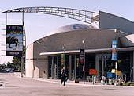
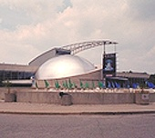

|
У нас тут ни разу не весна! В прошлую субботу погода сорвала все наши культурные
планы. Только мы собирались осознать и прочувствовать приход весны, как
разыгралась метелища! Навалило кучу снега, замело все дороги и тротуары!
Снегоразгребалки справлялись с трудом, да и то старались в основном для машин. А
педестриане (этак здесь пешеходов обзывают :), значит, как хотят, так пусть и
шарашутся по сугробам. :) Оно, правда, не так холодно, как у вас, но вкупе с
ветром весьма противно.
Поздравляем всю прекрасную половину человечества с праздником! Здесь 8 Марта не празднуют,
и Андрюше пришлось идти
на работу. Хотя перед этим, в воскресенье, мы конечно же отметили сей
замечательный праздник в тесном семейном кругу :).
В целом у нас все нормально. Усиленно пытаемся победить английский. Не так давно
я записалась на бесплатные курсы английского, дабы окончательно не утратить
навыки в отношении этого языка. Но вот теперь там почему-то перерыв, к тому же не
сильно много я выношу с тех курсов. Группа здоровенная, внимания на всех не
хватает, а голосишко у меня слабенький :)
Зато громко трезвонят югославы. Это просто кошмар! В нашей группе почти все
югославы. И как наступает переменка, то их не заткнешь. У меня аж голова
раскалывается. Во-первых, потому что громко, а во-вторых, у них очень многие
слова похожи на наши, русские, но только ужасно исковерканные :). Для них-то это
нормальный, родной язык, а для меня - кокофония :). Уж и преподавательница
просила их стараться говорить на английском, дескать, невежливо, когда другие не
понимают. - Бесполезно! :)
Вообще, надо сказать, страх перед английским у нас с Андрюшей исчез. Если раньше
я жутко тряслась перед каждым грядущим общением, то теперь наоборот: либо кругами
хожу вокруг телефона, думая, куда бы позвонить (если, конечно, это не рекруты, от
общения с которыми очень многое зависит), либо специально захожу в тот или иной
магазин, не сцелью покупки, но чтобы поговорить. Здесь же как зайдешь, продавцы
сразу начинают тебя обихаживать со всех сторон: как ты, да что ты, да чего
хотела.
Недавно вот зашла в магазин с картинами и репродукциями. У нас ведь все стены
светлые, цвета алибастер. Обои здесь как-то не приняты. Поэтому народ украшает
стены разного рода картинами. Как зашла, сразу ко мне подбежал негр - продавец и
давай расспрашивать и показывать мне все, что у них есть. Я ему говорю:
- Нет... Такие пейзажи не по мне. Мне бы чего-нибудь с морями-океянами... :)
Принялся он искать моря... Отчаявшись, обратил мое внимание на два каталога.
Дескать, можно заказать нужную вещь по каталогу. Полистала я оный, полистала и
спрашиваю:
- А Айвазовского у вас есть репродукции?
- Кого?
- Айвазовского. Вы что, незнакомы с таким великим _а_ртистом, как Айвазовский?
Который на весь мир известен своими морскими пейзажами!
Продавец стушевался, попросил меня написать на листочке столь неприкосновенное имя.
Я, как смогла, нацарапала...
- Это, наверное, русский художник?
- Наверное. :)
- Неееет. У нас тут в основном картины современных американских творцов.
- Ну что ж... Давайте посозерцаем, чего тут ваши творцы понакалякали.
С этими словами я вновь обратилась к каталогу. Продавец тут же бросился к другому
каталогу и с огромным рвением принялся искать мне морские пейзажи. Все, что бы он
мне не показывал, не удовлетворяло меня. И вдруг... На одну картину я запала! :)
Надо было видеть, какой радостью засияли его глаза! Даже черная физиономия
просветлела! (не в обиду будет сказано неграм. Просто так оно и было :). Картина
оказалась 60 на 90 см (идеальный размерчик, не правда ли? :) и стоила 39 с
половиной баксов.
- Все бы хорошо, - говорю, - но без рамочки-то будет некрасиво... :(
Негр тут же призвал на помощь китайца - другого продавца. И тот, не разобравшись
еще с сутью вопроса, по новой принялся демонстрировать мне имеющиеся в наличии
картины с какой-то там уму непостижимой мазней :) Я выпучила в удивлении глаза и
только хотела сказать, что такое я и сама нарисую, как на помощь пришел негр:
- Да нет! Такое ей не нравится!
И возвышенным голосом произнес:
- Она любит океаны!
После чего я радостно добавила:
- И шторм! - эмоционально выписывая в воздухе бурные волны :).
Наконец, китаец допер, нафига его позвали, и мы все дружно пошли по направлению к
образцам рамок. Китаец хватал все по очереди рамки и приставлял их к облюбованной
мною картине, совершая тем самым проверку на соответствие цвета и формы.
- Цвет, - говорю, - мне нужен блэк, ибо такая у меня в доме вся фенитша. И
вообще, мне нужен самый чипест фрэйм. Рамка дороже картины мне ни к чему.
К сожалению, настолько дешевых рамок в наличии не оказалось. Самая чипест - 50
баксов 8-0. Кошмар! То бишь все в сумме ( с налогами) залетает за 100 баксов.
- А если рамочка без гласса (стекла, в смысле)? - спрашиваю.
- А без гласса не бывает. Как же картина в такой рамке держаться будет?
- Так, - говорю, - спасибо. Номер и название картины я написала на листочке.
Рамочку тоже учла. А теперь пойду до хаты с мужем эдвайзиться. И скорее всего,
завтра зайду с целью совершения покупки...
...Но на следующий день я не зашла :(. Ибо Андрюша сказал: фиг тебе, а не картина
:). Ищи, дескать, чего-нибудь подешевле :). Ну и ладно, - подумала я, - зато
вдоволь наобщалась :). Хотя на английском все это выглядело намного более коряво
:). А картины придется искать в других местах. Я пока еще не в курсе относительно
мест их сосредоточения, но Ершовы сказали, что обязательно свозят нас туда.
Занимаюсь я, помимо походов за общением :), в основном тем, что ищу в интернете
предложения о работе, затем ищу информацию о соответствующей компании, затем
сочиняю cover letter в эту компанию и отправляю по указанному адресу резюме,
сопровождая его этим самым cover letter. Написание cover letter, впрочем как и
резюме, - это целая наука. Сначала я читала книги по поводу, как писать резюме,
потом изучала книгу, как сочинять и в каком формате ваять кавер лете. Ну а уж как
насучиняла! :) Только обидно, что под каждую фирму это письмо подправлять
приходится, фирмы-то все разные. Не знаю, я такой человек, что по прочтении
подобного cover letter обязательно бы отправила человеку ответ. Неважно,
положительный или отрицательный. Собственно, на психологию работодателя оно и
призвано давить. А Андрюша говорит, что на месте работодателя не стал бы читать
все эти письма, потому как никакой полезной информации они не несут. Разве что
положено так. Дань традиции. :) Так что... кто его знает?.. Народ здесь
неторопливый. Говорят, после отправки куда-нибудь резюме ждать ответа приходится
месяц, а то и два. Посему я и спешу поболе резьюмов раскидать. Авось кто-либо
когда-либо вспомнит обо мне.
У Андрюши на работе дела обстоят нормально. Компания, в которой он работает, -
довольно крутая. Например, почти во всех
магазинах стоят терминалы для карточек, по которым мы все рассчитываемся,
сделанные в IVI Checkmate - той самой компании. И количество этих
установленных терминалов намного превышает число инсталлированных терминалов
"Золотая корона". Это уже о чем-то говорит!
Особо нового у нас ничего не произошло. Разве что посетили мы в воскресенье,
когда метель утихомирилась и погода напоминала пушкинскую строчку "мороз и солнце
- день чудесный!", научный центр Онтарио.

Это большая-пребольшая выставка в
несколько уровней с демонстрацией разного рода научных достижений: космических,
инженерных и пр (типа ВДНХ). Почти все можно покрутить, запустить, самому
проэкспериментироваться. Довольно интересно, хотя почему-то Андрюшу все это дело
не очень воодушевило. Ему гораздо больше приглянулся магазин при этой выставке. А
я оттуда вообще еле ушла :). Там всякие разные сувениры: призмы, переливающиеся
цилиндры, объемные картинки, научные детские книжки про космос, динозавров и
всякую всячину. Правда, в основном сей магазин ориентирован на детей. Найти бы
такой же магазин, только для взрослых.

Ну и конечно же мы посетили кинотеатр при этой выставке. Фильм, как и тот, что мы
смотрели про динозавров, был научно-популярный, только про Эверест. И цель показа
этого фильма тоже была рассчитана на то, чтобы поразить зрителя эффектами. Но
если тот кинотеатр был с объемным изображением, то этот кинотеатр сферический. И
экран представляет собой полусферу - снизу доверху. Таким образом, самые ближние
ряды почти лежачие, а с удалением рядов спинка принимает все более вертикальное
положение. То есть где бы человек ни сидел, он всегда видит всю картину. Правда,
картина эта настолько велика (по причине сферообразности), что приходится вертеть
головой, чтобы чего-нибудь не упустить. Эффект, конечно, поразителен: горы,
вершины, высота, снежные обвалы... И такое ощущение, что ты внутри всего этого.
Мне, правда, не нравились те моменты, когда камера слишком вертелась. - От этого
сильно кружится голова и укачивает. У меня даже руки онемели. Может, это от того,
что нам с Андрюшей достались лежачие места. Когда мне становилось особенно плохо,
я закрывала глаза и, видимо, от помутнения в мозгах, слабела и засыпала. Андрюша
сразу же толкал меня и говорил: "Ты что, спишь что ли? Мы зачем сюда пришли?
Поспать?" Короче, я еле дождалась окончания фильма и отошла только к вечеру. При
выходе из зала детки качались из стороны в сторону, как пьяненькие. И я тоже :)
Что-то больше не хочется мне в этот кинотеатр :) Попробовали, и хватит. По дороге
домой Андрюша изрек, что хочет уже просто в кинотеатр, в нормальный. И на
нормальный художественный фильм, без спецэффектов :).
Развлечений здесь, конечно, дофига. Правда, довольно дорого все это стоит.
Вообще, пока мы еще всему удивляемся. Не только развлечениям, а вообще всему.
Поражают улочки, когда едешь в автобусе, поражают магазины, поражает просто
здешняя жизнь. Здесь все делается для максимального удобства людей. Ты только
подумаешь: эх, неплохо бы иметь такую-то фичу, - а оно уже есть, уже кто-то
придумал. Например, чтобы не показывать гостям, каким полотенцем что следует
вытирать, пошел и купил гостевые салфетки в красивенькой упаковочке. Чтобы не
стирать вручную особо чувствительные к стирке вещи типа колготок (в машину-то их
просто так не засунешь), пошел
и купил сетчатый мешок на молнии. Засунул вещь в мешок, мешок - в машину, и
стирается все это преспокойненько. Только подумаешь, что неплохо бы что-нибудь
подложить под колеса кровати, дабы не каталась :), а в магазине уже продаются
специальные резиновые подушечки, именно для этих колес и предназначенные. И тоже
в красивой упаковочке :). Во всех общественных туалетах всегда есть бумага.
Причем очень мягкая и белоснежная. Я ни разу не видела здесь бумаги, как в
России, непрезентабельного цвета и как наждак. По одному рулону бумага не
продается. Только большими упаковками: по 6-9 рулонов в каждой. Оно и понятно.
Такая бумага быстро расходуется. С удовольствием :). Помимо бумаги, в туалетных
кабинках имеются
специальные бумажные круги на унитаз, дабы с удобством посидеть :). Я уж не
говорю о том, что везде белоснежные раковины, жидкое мыло (нажимаешь кнопарик, и
тебе на руку падает капелька мыльца) и сушуары. И ни разу я не видела, чтобы
туалет был платным. Это, по-моему, российское изобретение :).
Да простит меня господь за туалетные темы! :)
В магазинах что только не продается. Даже тряпочки всяческие: для окон, для
мебели, еще для чего-то. Трудно даже придумать приспособление, которого бы здесь
не наблюдалось. Пойдешь в винный магазин, тебе каждую бутылочку оденут в
мягонькую сеточку, чтобы не побилась. :)
Очень много приходит жильцам бесплатной рекламы. Утром открываешь дверь, а на
пороге уже лежит пакетик с газетками и журнальчиками, в которых красочно
нарисованы товары тех или иных магазинов вместе с ценами, а также указано, какие
и когда будут скидки, какие распродажи. Скидочные купоны прилагаются. В общем,
все сделано для того, чтобы человек потратил в этих магазинах как можно больше
денег. Попасться на этот крючок очень легко. Например, увидела я купон на
приобретение помады и лака, то есть если покупаешь помаду, то лак достается
бесплатно. Ну как не пойти и не отовариться? :) Приходят целые каталоги магазинов
- довольно толстые книжицы, программы телевизионных каналов на целый месяц и
всякой разной дребедени.
И еще прикольно, что здесь масса всего посылается обыкновенной почтой. И что
самое интересное - доходит! :) И достаточно быстро. Нам таким образом (просто в
почтовом конверте) пришли банковские карточки, карточки с СИНом, счета. Чеки
отправляются тоже по почте. И никто не боится, что конверт потеряется. Нам только
карточки VISA принесли домой лично в руки. Но здесь уж очень большая
ответственность, ибо расплатиться по этим карточкам может кто угодно, пин вводить
не требуется. Кстати, эти кредитные карточки (VISA) нам дали только благодаря
Андрюшиной зарплате. Он сначала хотел попробовать взять кредит, чтобы сразу же
рассчитаться с ЦФТ. Просто здешние проценты не такие страшные. Но кредит ему не дали.
Сказали, с радостью бы, но права не имеем. Уж очень, дескать, недолго вы у нас
пребываете. Вот через полгодика... Но Визу, говорят, можем дать прямо сейчас.
Андрюша тут же согласился, подписал все необходимые бумаги, и через два дня нам
принесли карточки. Мы уже даже расплатились по ним за билеты в научный центр.
Смысл в чем? Кредитные варточки очень важны для нас. Расчет по ним и последующая
оплата приходящих счетов будут составлять нашу кредитную историю. И чем раньше
эта кредитная история начнется, тем скорее мы поимеем возможность брать что-
нибудь в кредит. Вот недавний пример с тем же Темой. Решили они купить большой
телевизор. Но полный кредит на эту дорогую покупку им не дали, ибо кредитная
история у них не очень большая. По этой причине им пришлось заплатить сразу аж
полстоимости телевизора. Но телевизор, надо сказать, пааачетный! Мы теперь ходим
друг к другу фильмы смотреть: к ним, - то, что по каналам идет, а к нам - ДВД-шные
диски :). Эх, объединить бы эти два девайса! - Круто бы вышло!
Интересен был еще такой момент, связанный с банком. Андрюша сказал, что когда
вышел из банка, был неизмеримо счастлив, невзирая на то, что в кредите ему
отказали :). Вот так они умеют отказывать :). Помню, еще в первые дни нашего
пребывания в Канаде у нас раза три были проблемы с карточками (дебетными). Мы
пытаемся платить, а терминал выдает, что у нас на счете денег недостаточно или
что-нибудь в этом роде. Случился даже казус с покупкой мебели. Мебель доставили,
надо бы расплатиться, причем наличными, а мы не можем снять деньги по карточке.
Короче, разъяренный Андрюша пошел в этот Роял-банк... Но не успел еще начать
высказывать претензии, как они давай быстренько при нем исправлять свои ошибки, и
еще подарочек ему вручили, типа за моральный ущерб. Подарок представлял из себя
плетеную корзинку с двумя красивыми кружками, коробочками кофе, чая, печеньками и
еще с чем-то... И все это в красивенькой упаковочке с ленточками :). Видали, как
клиентов удерживают? :)
Ну, собственно, пока все. Вроде, что хотела, написала.
Счастливо!
Следующее письмо- Письмо 6
|